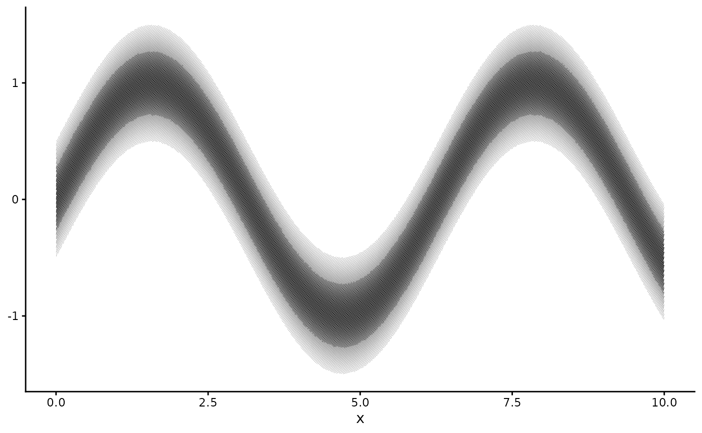

Wraps a halftone layer so that its screen is drawn the way a press would put it on paper rather than
the way the plate describes it. Compose it around with_halftone() or a halftone geom:
with_press(with_halftone(geom_col()), gain = 0.3).
Usage
with_press(
layer,
gain = 0.2,
slur = 0,
slur_angle = 90,
fillet = 0,
mottle = 0,
mottle_scale = 4,
registration = 0,
seed = NULL
)Arguments
- layer
A halftone layer, a list holding one, or a whole plot. Given a plot, every layer in it is wrapped, each with its own seed, so the inks miss each other and mottle independently the way separate plates do.
- gain
Tone value increase at a 50 % screen. 0 leaves the screen alone.
- slur
Length of the smear, as a fraction of the lattice pitch, in the direction the sheet travelled. 0.1 is a press running a little fast, 0.3 a visible fault. 0 leaves the dots round.
- slur_angle
Direction of that smear in degrees, measured anticlockwise from the x axis.
- fillet
Radius of the ink bridge where two dots meet, as a fraction of the lattice pitch. Useful values are small, and they act with
gain: atgain = 0.25, 0.02 rounds the cusp, 0.04 draws a clear bridge and blots the last eighth of the tone range, and 0.08 pulls the fill-in down into the midtones. Much above that the closing swallows the gaps and the shadows go flat. 0 leaves the cusp where the circles cross. Needs the polyclip package.- mottle
Relative standard deviation of the slow variation in ink density across the sheet. 0.1 is a visible but unremarkable impression, 0.25 a poor one.
- mottle_scale
Distance in mm over which that variation changes. Real mottle runs at a few millimetres.
- registration
Standard deviation in mm of this layer's plate offset. 0 is perfect registration.
- seed
Seed for the plate offset, so a figure rebuilds identically.
NULLdraws a new one.
Dot gain
Ink spreads into paper, so a printed dot is larger than its plate. The trade measures this as tone
value increase, the extra coverage at a 50 % screen: roughly 0.10 to 0.20 for offset on coated stock
and 0.25 to 0.35 on newsprint. gain is that number.
It applies to coverage, the fraction of paper the screen inks, which is what a densitometer reads and
is not the same as the tone the screen was asked for. At the default ink weight a full-tone cell
covers about three quarters of its lattice cell, not all of it. The increase follows sin(pi * coverage),
so it vanishes at bare paper and at a covered sheet and peaks where a press gains most. Coverage is
capped at the sheet, and that cap is what fills a shadow in: above about gain = 0.2 the dark dots
grow past the pitch, touch, and print as solid with pinholes.
Mottle
Ink does not lie down evenly. mottle adds a slow random variation in density across the sheet, smooth at the
scale of mottle_scale millimetres, which is what separates a real impression from a clean digital screen. It
varies tone, so it survives resizing like everything else here.
Slur
A sheet moving under the plate smears each dot along its direction of travel, so the dot prints as a capsule
rather than a circle. slur is the length of that smear as a fraction of the pitch and slur_angle its
direction. It is drawn as the true swept shape, not as a second faint impression: the output holds no partial
transparency.
Ink bridges
Where two dots overlap, the circles cross in a sharp concave cusp. Wet ink does not: surface tension pulls a
fillet across the notch. fillet is the radius of that bridge as a fraction of the pitch, applied as a
morphological closing of the union of the overlapping dots, which rounds concave corners and leaves convex
boundaries alone. Only dots close enough to reach a neighbour are processed, so a figure pays for it in its
shadows. A bridge is ink, so it darkens the shadows a little on top of gain.
Ink cannot bridge dots that do not meet, and at the default ink weight (dot_max = 0.9) a full-tone dot still
stands a tenth of a pitch clear of its neighbour. So fillet needs something to work with: either gain above
about 0.2, which closes that gap in the shadows, or a heavier plate. On its own it changes nothing below the
top of the tone range.
What the bridge changes is the shape of the white interstices between dots, which are features of the pitch. At 0.35 mm they are too small to read as shapes and the fillet arrives as ink weight alone. Use it where the screen already reads as dots: an editorial plate at 0.6 mm and up.
It needs the polyclip package and it is the one setting here with a real cost: budget about a second per twenty thousand touching dots.
Registration
Each ink is a separate plate and the plates never align perfectly. registration is the standard
deviation, in mm, of a random offset applied to this layer's lattice. It only shows when a figure is
built from several halftone layers, one per ink, as geom_halftone_cmyk() does. Values around
0.05 mm read as a good press, 0.2 mm as a cheap one.
Examples
d <- data.frame(x = seq(0, 10, length.out = 60))
d$y <- sin(d$x); d$lo <- d$y - 0.5; d$hi <- d$y + 0.5
ggplot2::ggplot(d, ggplot2::aes(x)) +
with_press(with_halftone(ggplot2::geom_ribbon(ggplot2::aes(ymin = lo, ymax = hi),
fill = "black")),
gain = 0.3) +
ggplot2::theme_classic() + theme_halftone()
